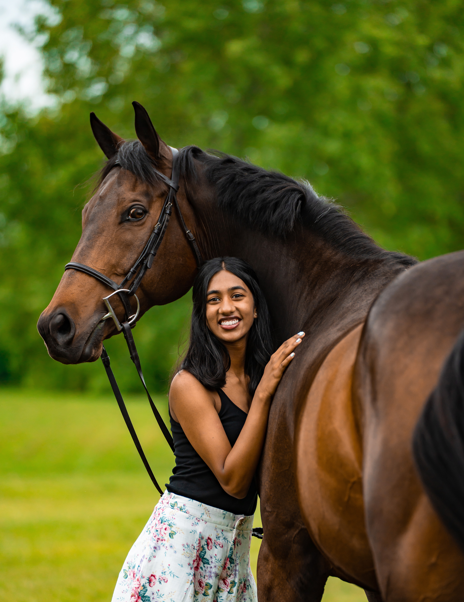
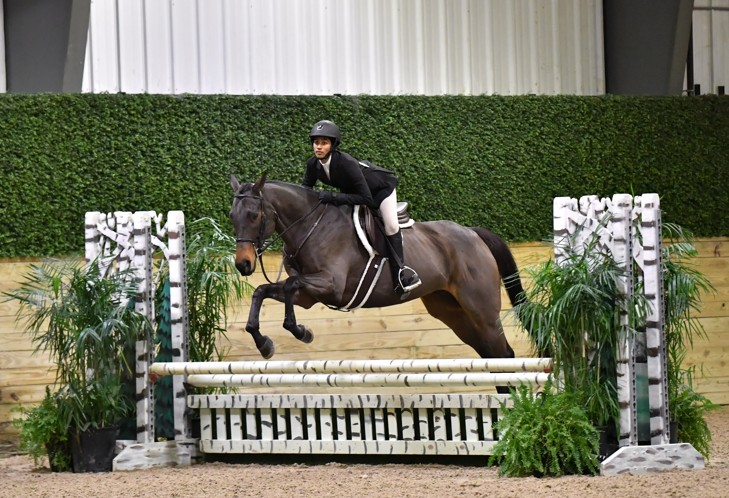
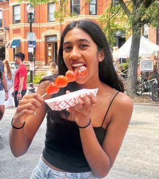
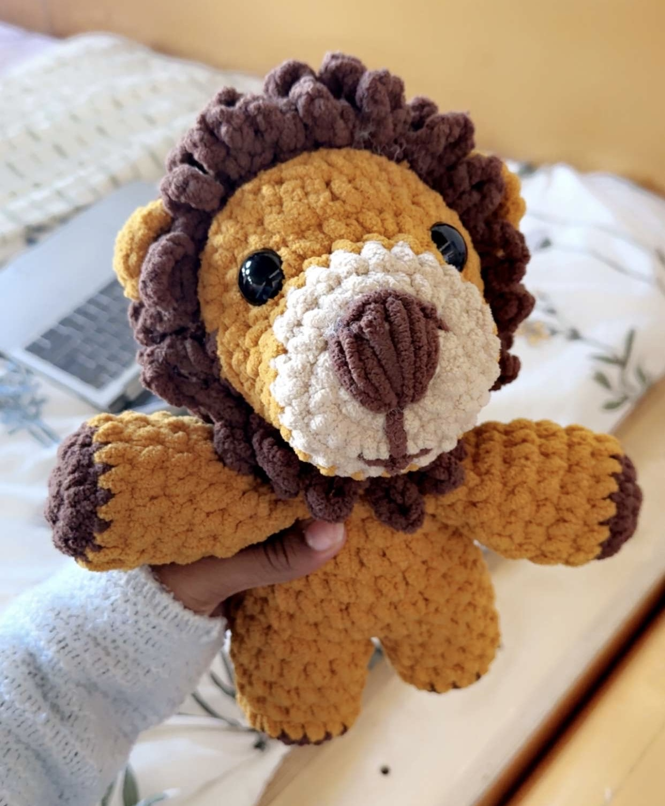

I am a junior at MIT studying Mechanical Engineering with a concentration in Robotics. I like to walk the line between hardware and software, using tools like AI, machine learning, and data analysis to tackle physical engineering problems. My work has included robotic manipulation, medical devices, aerospace engineering, and hands-on mechanical design, with a particular interest in assistive technology.
I am most excited by work where computation leads to something tangible. Rather than stopping at an output on a screen, I enjoy using software to understand a physical system and translating those insights into a hardware decision, mechanism, or action. I am drawn to problems where software and mechanical design continuously inform one another, especially when the final system has a meaningful impact on how people interact with technology.

Outside of academics and research, I enjoy activities that let me explore new places, stay creative, and spend time doing things that are completely different from engineering.

I grew up horseback riding before coming to MIT and have always enjoyed spending time around horses. Riding taught me patience, awareness, and how much communication can happen without words.

I love traveling, exploring new cities and cultures, and trying local foods wherever I go. Some of my favorite parts of traveling are the small restaurants, markets, and unexpected places you find along the way.

Crocheting is one of my favorite creative outlets. I enjoy the process of starting with just a ball of yarn and a concept, then transforming it into something tangible. It gives me an alternate way to create with my hands and bring an idea to life.
Across engineering, teaching, travel, and creative work, I am motivated by the same thing: understanding complex problems and improving them through persistence, iteration, and thoughtful design. I enjoy taking something unfamiliar, breaking it down, testing ideas, and learning along the way. I’m happiest when I’m learning something new, collaborating closely with other people, and turning ideas into tangible solutions.